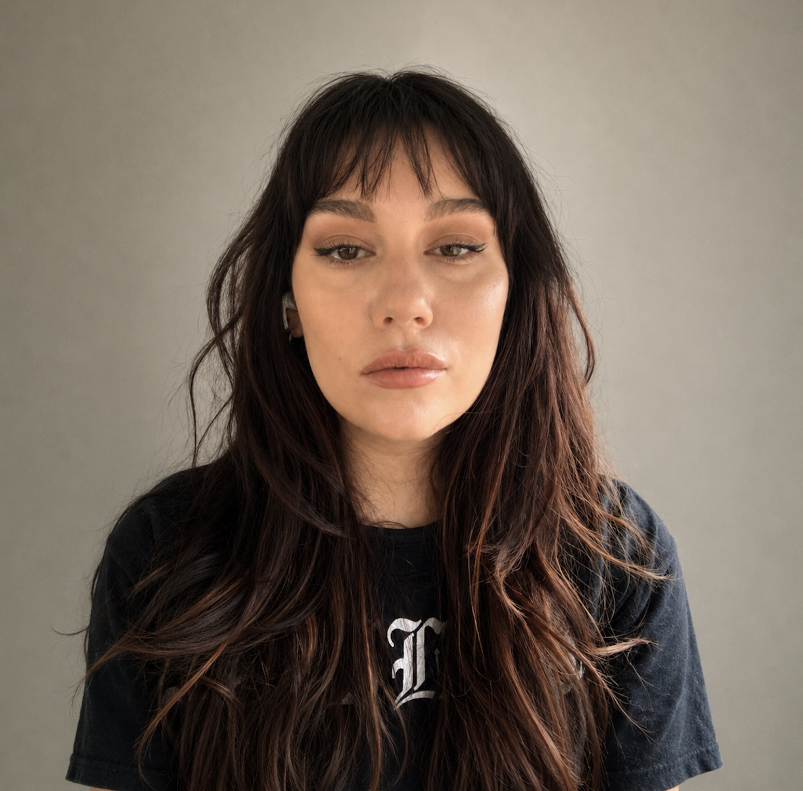

Michelle Stanković
Postdoctoral Researcher
Faculty of Translation & Language Sciences
Universitat Pompeu Fabra
Poblenou Campus
Roc Boronat 138, 08018 Barcelona, Spain

Google Scholar ORCID VA Project Website
I am a cognitive scientist. I am interested in how emotion shapes language processing, especially for bilingual speakers. I’m also interested in how language can influence decision-making, especially in bilingual and migrant communities.
Currently, I am working for the Valence Asymmetries ERC Project. I received my PhD in Psychology from Curtin University in Australia.
I don’t like self-promotion. If you have questions for or about me, send me an email: Michelle.stankovic@upf.edu.
News
ESSLLI Course STAL Workshop Ways of Speaking Badly Workshop Valence Asymmetries Conference